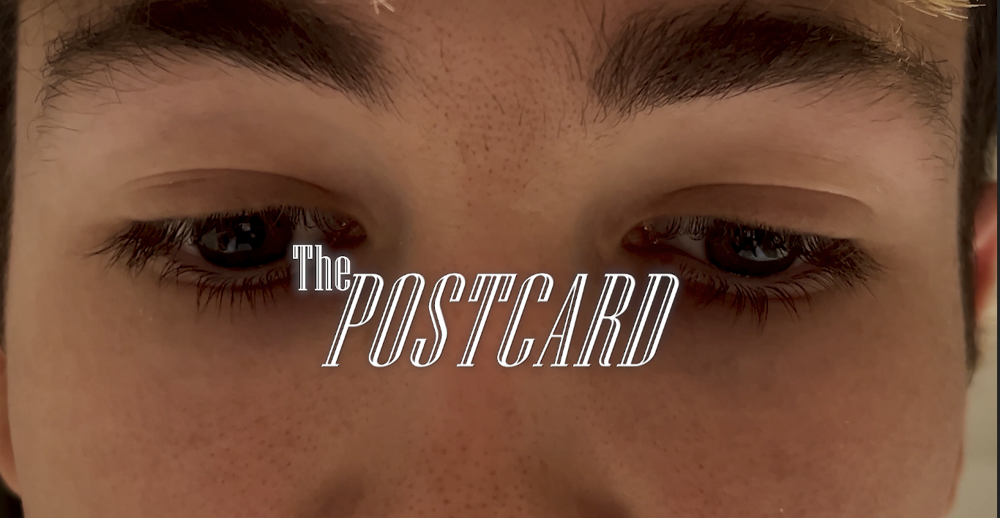
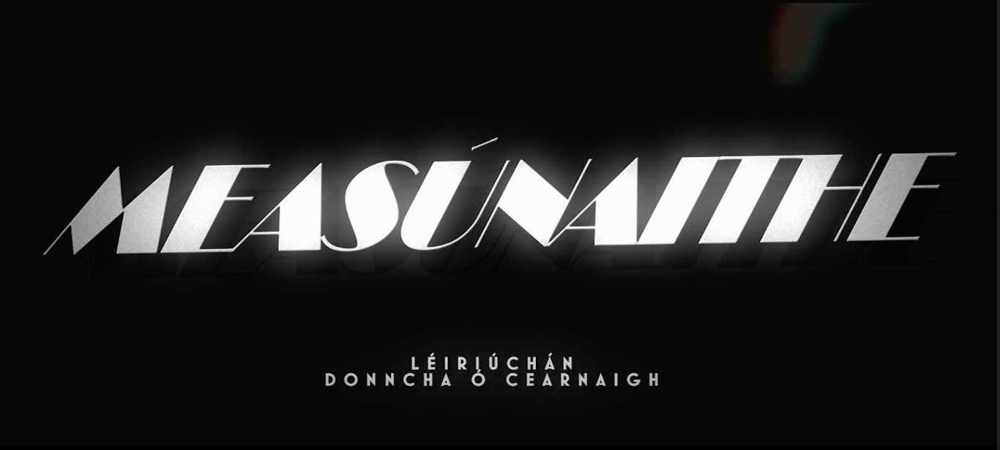
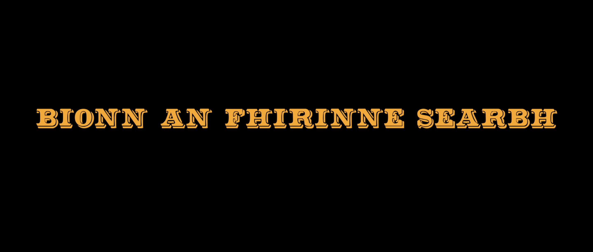
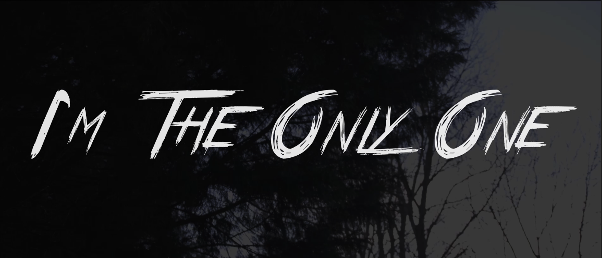
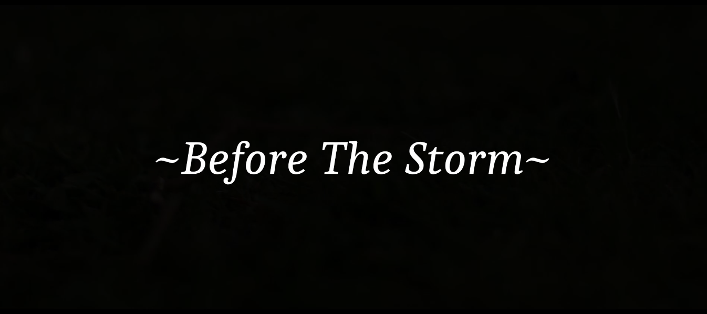

Portfolio

The Postcard (2025)
01A project I was involved in for an end of year assignment for my Film Practice module in the course Film & Digital Media, during my First Year in the University of Galway.
Roles: Cinematography, Editing, Starring
Directed by Jack Slattery

Measúnaithe (2025)
02A solo digital storytelling piece completed for the Scéalíocht Digiteach module at the University of Galway.
Roles: Solo Project

Bíonn an Fhírinne Searbh (2020)
03A short piece produced for a Second Year Irish class project at Gaelcholáiste Chill Dara.
Roles: Directing, Writing, Cinematography, Editing

I'm The Only One (2019)
04A short film created for Griese Young Filmmakers exploring isolation in a familiar landscape.
Roles: Writing, Directing

Before The Storm (2020)
05A one-minute, one-take film entered in the Kildare County Council "One Shot, One Minute" competition.
Roles: Directing, Cinematography, Editing